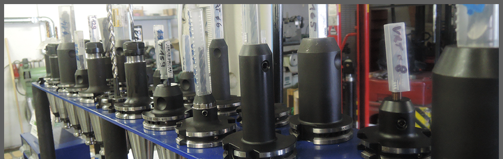
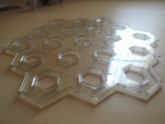
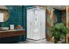
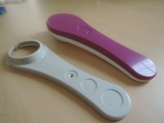
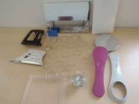
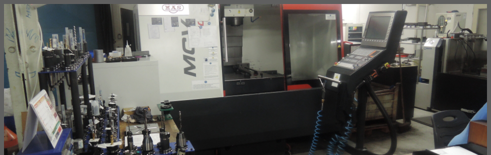
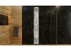
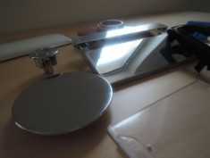
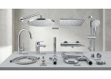

Přesné vstřikování plastů a konstrukční výlisky
Průmyslová výroba technických dílů z termoplastů, komponentů pro sanitární systémy a nástrojářský servis forem. Vstřikovací lisy s uzavírací silou od 50 do 450 tun v certifikovaném provozu v Tetčicích.

Výrobní technologie a strojní park
Zajišťujeme kompletní výrobní cyklus od optimalizace konstrukce plastového dílu přes odzkoušení vstřikovací formy až po velkosériovou produkci s návaznou montáží.
Vstřikování plastů 50 až 450 t
Moderní vstřikovací lisy vybavené sušičkami granulátu, temperačními jednotkami a automatickými manipulátory pro stabilní cyklus bez propadlin.
- Materiály: PA66, POM, PBT, ABS, SAN, PP, PE
- Hmotnost výlisků od 1 g do 1 800 g
- Optická čirost i technické skelné výztuže GF30
Nástrojárna a formy
Vlastní nástrojářské zázemí pro preventivní údržbu, úpravy tvarových dutin, laserové navařování a výrobu náhradních vložek přímo v areálu.
- Kapacita forem do hmotnosti 3,5 tuny
- CNC 3D frézování a elektroerozivní hloubení EDM
- Okamžitý servis pro minimalizaci odstávek
Kontrola kvality a certifikace
Metrologická laboratoř pro rozměrovou kontrolu dle norem DIN 16742, testování mechanické pevnosti a tlakové zkoušky těsnosti dílů.
- Protokoly rozměrové kontroly pro každou šarži
- Zkoušky těsnosti a cyklické zátěžové testy
- Certifikovaný systém ČSN EN ISO 9001:2016
Katalog dílů a technických řešení
Přehled hlavních výrobních skupin vyráběných ve výrobním areálu LITEN s.r.o. Kliknutím na kartu otevřete detailní technickou specifikaci.

Přesné technické výlisky pro automotive a průmysl
Konstrukční díly s vysokou tvarovou stálostí a mechanickou pevností z PA66-GF30 a POM-C pro náročné mechanismy.

Komponenty pro sanitární a wellness techniku
Tvarově komplexní pohledové díly, tělesa ventilů, trysky a rozvody z ABS a SAN pro dlouhodobý kontakt s vodou.

Konstrukční díly z polypropylenu a polyethylenu
Chemicky odolné kryty, elektroinstalační boxy, montážní příruby a transportní pouzdra z PP a PE-HD.

Dvoukomponentní 2K vstřikování a zastřikování zálisků
Kombinace konstrukčního termoplastu s elastomerovým těsněním TPE v jednom cyklu a zastřikování mosazných závitů.

Výroba a preventivní údržba vstřikovacích forem
Kompletní servis vstřikovacích forem, CNC 3D obrábění dutin, elektroerozivní hloubení EDM a laserové navařování v Tetčicích.

Hydromasážní a rozvodné sanitární moduly
Výroba těles masážních panelů, vanových modulů a vodicích prvků s vysokou odolností proti usazování vodního kamene.

Optické kryty a pohledové díly s vysokým leskem
Precizní čelní panely, optické průzory a ovládací prvky z transparentního PC a PMMA bez propadlin a stop po vyhazovačích.

Montáž podskupin, ultrazvukové svařování a kompletace
Finální navazující montáž sestav, ultrazvukové spojování plastů, tamponový potisk a expediční balení dle požadavků klienta.
Kontaktní a výrobní centrum
Navštivte náš výrobní areál v Tetčicích nebo nám zašlete 3D data (STEP / IGES) pro nezávazné technologické posouzení a nabídku výroby.
LITEN s.r.o.
Poptávkový formulář pro lisování a formy
Vyplňte základní parametry Vaší poptávky. Náš technologický tým Vás bude kontaktovat s technickou kalkulací.